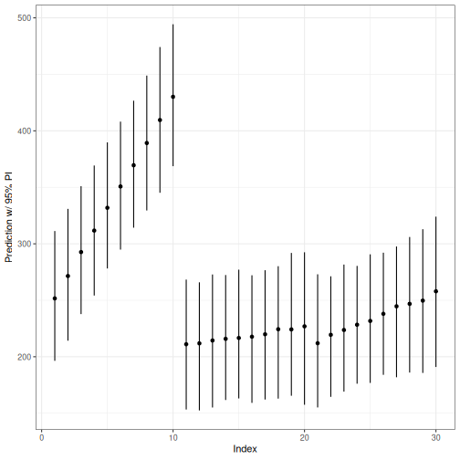
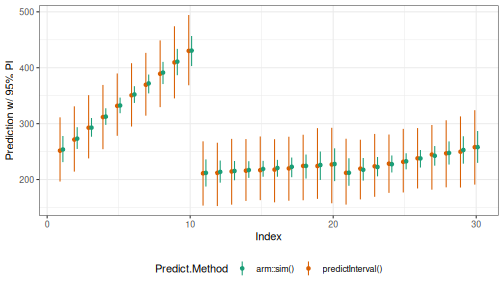
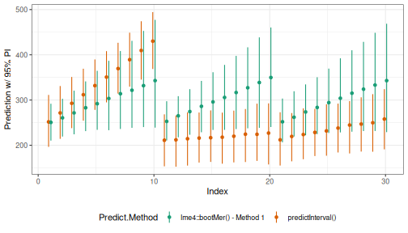
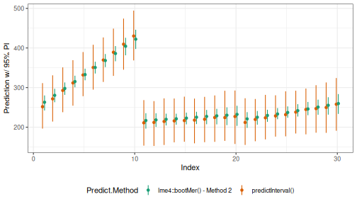
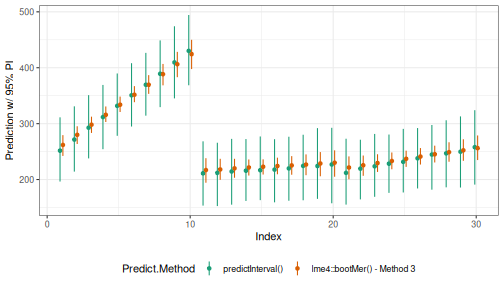
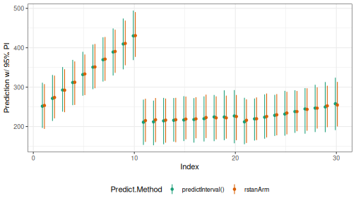

Prediction Intervals from merMod Objects
Jared Knowles and Carl Frederick
Written 2015-05-21 (last updated 2026-05-29)
Source:vignettes/Using_predictInterval.Rmd
Using_predictInterval.RmdIntroduction
Fitting (generalized) linear mixed models, (G)LMM, to very large data
sets is becoming increasingly easy, but understanding and communicating
the uncertainty inherent in those models is not. As the documentation
for lme4::predict.merMod() notes:
There is no option for computing standard errors of predictions because it is difficult to define an efficient method that incorporates uncertainty in the variance parameters; we recommend
lme4::bootMer()for this task.
We agree that, short of a fully Bayesian analysis, bootstrapping is
the gold-standard for deriving a prediction interval predictions from a
(G)LMM, but the time required to obtain even a respectable number of
replications from bootMer() quickly becomes prohibitive
when the initial model fit is on the order of hours instead of seconds.
The only other alternative we have identified for these situations is to
use the arm::sim() function to simulate values.
Unfortunately, this only takes variation of the fixed coefficients and
residuals into account, and assumes the conditional modes of the random
effects are fixed.
We developed the predictInterval() function to
incorporate the variation in the conditional modes of the random effects
(CMRE, a.k.a. BLUPs in the LMM case) into calculating prediction
intervals. Ignoring the variance in the CMRE results in overly confident
estimates of predicted values and in cases where the precision of the
grouping term varies across levels of grouping terms, creates the
illusion of difference where none may exist. The importance of
accounting for this variance comes into play sharply when comparing the
predictions of different models across observations.
We take the warning from lme4::predict.merMod()
seriously, but view this method as a decent first approximation the full
bootstrap analysis for (G)LMMs fit to very large data sets.
Conceptual description
In order to generate a proper prediction interval, a prediction must account for three sources of uncertainty in mixed models:
- the residual (observation-level) variance,
- the uncertainty in the fixed coefficients, and
- the uncertainty in the variance parameters for the grouping factors.
A fourth, uncertainty about the data, is beyond the scope of any prediction method.
As we mentioned above, the arm:sim() function
incorporates the first two sources of variation but not the third ,
while bootstrapping using lme4::bootMer() does incorporate
all three sources of uncertainty because it re-estimates the model using
random samples of the data.
When inference about the values of the CMREs is of interest, it would
be nice to incorporate some degree of uncertainty in those estimates
when comparing observations across groups.
predictInterval() does this by drawing values of the CMREs
from the conditional variance-covariance matrix of the random affects
accessible from lme4::ranef(model, condVar=TRUE). Thus,
predictInterval() incorporates all of the uncertainty from
sources one and two, and part of the variance from source 3, but the
variance parameters themselves are treated as fixed.
To do this, predictInterval() takes an estimated model
of class merMod and, like predict(), a
data.frame upon which to make those predictions and:
- extracts the fixed and random coefficients
- takes
ndraws from the multivariate normal distribution of the fixed and random coefficients (separately) - calculates the linear predictor for each row in
newdatabased on these draws, and - optionally incorporates the residual variation (per the
arm::sim()function), and, - returns newdata with the lower and upper limits of the prediction interval and the mean or median of the simulated predictions
Currently, the supported model types are linear mixed models and mixed logistic regression models.
The prediction data set can include levels that are not in the estimation model frame. The prediction intervals for such observations only incorporate uncertainty from fixed coefficient estimates and the residual level of variation.
Comparison to existing methods
What do the differences between predictInterval() and
the other methods for constructing prediction intervals mean in
practice? We would expect to see predictInterval() to
produce prediction intervals that are wider than all methods except for
the bootMer() method. We would also hope that the
prediction point estimate from other methods falls within the prediction
interval produced by predictInterval(). Ideally, the
predicted point estimate produced by predictInterval()
would fall close to that produced by bootMer().
This section compares the results of predictInterval()
with those obtained using arm::sim() and
lme4::bootMer() using the sleepstudy data from
lme4. These data contain reaction time observations for 10
days on 18 subjects. The data are sorted such that the first 10
observations are days one through ten for subject 1, the next 10 are
days one through ten for subject 2 and so on. The example model that we
are estimating below estimates random intercepts and a random slope for
the number of days.
Step 1: Estimating the model and using
predictInterval()
First, we will load the required packages and data and estimate the model:
set.seed(271828)
data(sleepstudy)
fm1 <- lmer(Reaction ~ Days + (Days|Subject), data=sleepstudy)
arm::display(fm1)#> lmer(formula = Reaction ~ Days + (Days | Subject), data = sleepstudy)
#> coef.est coef.se
#> (Intercept) 251.41 6.82
#> Days 10.47 1.55
#>
#> Error terms:
#> Groups Name Std.Dev. Corr
#> Subject (Intercept) 24.74
#> Days 5.92 0.07
#> Residual 25.59
#> ---
#> number of obs: 180, groups: Subject, 18
#> AIC = 1755.6, DIC = 1760.3
#> deviance = 1751.9Then, calculate prediction intervals using
predictInterval(). The predictInterval
function has a number of user configurable options. In this example, we
use the original data sleepstudy as the newdata. We pass
the function the fm1 model we fit above. We also choose a
95% interval with level = 0.95, though we could choose a
less conservative prediction interval. We make 1,000 simulations for
each observation n.sims = 1000. We set the point estimate
to be the median of the simulated values, instead of the mean. We ask
for the linear predictor back, if we fit a logistic regression, we could
have asked instead for our predictions on the probability scale instead.
Finally, we indicate that we want the predictions to incorporate the
residual variance from the model – an option only available for
lmerMod objects.
PI.time <- system.time(
PI <- predictInterval(merMod = fm1, newdata = sleepstudy,
level = 0.95, n.sims = 1000,
stat = "median", type="linear.prediction",
include.resid.var = TRUE)
)Here is the first few rows of the object PI:
| fit | upr | lwr |
|---|---|---|
| 251.6685 | 311.3171 | 196.4096 |
| 271.4802 | 330.9195 | 214.2175 |
| 292.6809 | 350.9867 | 237.7714 |
| 311.6967 | 369.2911 | 254.2237 |
| 331.8318 | 389.7439 | 278.1857 |
| 350.7450 | 408.1386 | 294.8506 |
The three columns are the median (fit) and limits of the
95% prediction interval (upr and lwr) because
we set level=0.95. The following figure displays the output
graphically for the first 30 observations.
library(ggplot2);
ggplot(aes(x=1:30, y=fit, ymin=lwr, ymax=upr), data=PI[1:30,]) +
geom_point() +
geom_linerange() +
labs(x="Index", y="Prediction w/ 95% PI") + theme_bw()
Step 1a: Adjusting for correlation between fixed and random effects
The prediction intervals above do not correct for correlations between fixed and random effects. This tends to lead to predictive intervals that are too conservative, especially for existing groups when there is a lot of data on relatively few groups. In that case, a significant portion of the uncertainty in the prediction can be due to variance in the fixed intercept which is anti-correlated with variance in the random intercept effects. For instance, it does not actually matter if the fixed intercept is 5 and the random intercept effects are -2, 1, and 1, versus a fixed intercept of 6 and random intercept effects of -3, 0, and 0. (The latter situation will never be the MLE, but it can occur in this package’s simulations.)
To show this issue, we’ll use the sleep study model, predicting the reaction times of subjects after experiencing sleep deprivation:
#> lmer(formula = Reaction ~ Days + (Days | Subject), data = sleepstudy)
#> coef.est coef.se
#> (Intercept) 251.41 6.82
#> Days 10.47 1.55
#>
#> Error terms:
#> Groups Name Std.Dev. Corr
#> Subject (Intercept) 24.74
#> Days 5.92 0.07
#> Residual 25.59
#> ---
#> number of obs: 180, groups: Subject, 18
#> AIC = 1755.6, DIC = 1760.3
#> deviance = 1751.9Let’s use the model to give an interval for the true average body fat of a large group of students like the first one in the study — a 196cm female baseball player:
sleepstudy[1,]#> Reaction Days Subject
#> 1 249.56 0 308
predictInterval(fm1, sleepstudy[1,], include.resid.var=0) #predict the average body fat for a group of 196cm female baseball players#> fit upr lwr
#> 1 253.9977 270.7438 236.2829There are two ways to get predictInterval to create less-conservative
intervals to deal with this. The first is just to tell it to consider
certain fixed effects as fully-known (that is, with an effectively 0
variance.) This is done using the ignore.fixed.effects
argument.
predictInterval(fm1, sleepstudy[1,], include.resid.var=0, ignore.fixed.terms = 1)#> fit upr lwr
#> 1 253.8537 268.5299 239.6275
# predict the average reaction time for a subject at day 0, taking the global intercept
# (mean reaction time) as fully known
predictInterval(fm1, sleepstudy[1,], include.resid.var=0, ignore.fixed.terms = "(Intercept)")#> fit upr lwr
#> 1 254.2354 269.3875 239.3116
#Same as above
predictInterval(fm1, sleepstudy[1,], include.resid.var=0, ignore.fixed.terms = 1:2)#> fit upr lwr
#> 1 253.6743 269.8776 237.984
# as above, taking the first two fixed effects (intercept and days effect) as fully knownThe second way is to use an ad-hoc variance adjustment, with the
fix.intercept.variance argument. This takes the model’s
intercept variance
and adjusts it to:
In other words, it assumes the given intercept variance incorporates spurious variance for each level, where each of the spurious variance terms has a precision equal to the of the precisions due to the individual groups at that level.
predictInterval(fm1, sleepstudy[1,], include.resid.var=0,
fix.intercept.variance = TRUE)#> fit upr lwr
#> 1 253.5872 268.8683 236.6639
# predict the average reaction time for a subject at day 0,, using an ad-hoc
# correction for the covariance of the intercept with the random intercept effects.A few notes about these two arguments:
-
fix.intercept.variance=Tis redundant withignore.fixed.effects=1, but not vice versa. - These corrections should NOT be used when predicting outcomes for groups not present in the original data.
Step 2: Comparison with arm::sim()
How does the output above compare to what we could get from
arm::sim()?
PI.arm.time <- system.time(
PI.arm.sims <- arm::sim(fm1, 1000)
)
PI.arm <- data.frame(
fit=apply(fitted(PI.arm.sims, fm1), 1, function(x) quantile(x, 0.500)),
upr=apply(fitted(PI.arm.sims, fm1), 1, function(x) quantile(x, 0.975)),
lwr=apply(fitted(PI.arm.sims, fm1), 1, function(x) quantile(x, 0.025))
)
comp.data <- rbind(data.frame(Predict.Method="predictInterval()", x=(1:nrow(PI))-0.1, PI),
data.frame(Predict.Method="arm::sim()", x=(1:nrow(PI.arm))+0.1, PI.arm))
comp.data$Predict.Method <- factor(comp.data$Predict.Method, levels = unique(comp.data$Predict.Method))
ggplot(aes(x=x, y=fit, ymin=lwr, ymax=upr, color=Predict.Method), data=comp.data[c(1:30,181:210),]) +
geom_point() +
geom_linerange() +
labs(x="Index", y="Prediction w/ 95% PI") +
theme_bw() + theme(legend.position="bottom") +
scale_color_brewer(type = "qual", palette = 2)
The prediction intervals from arm:sim() are much smaller
and the random slope for days vary more than they do for
predictInterval. Both results are as expected, given the
small number of subjects and observations per subject in these data.
Because predictInterval() is incorporating uncertainty in
the CMFEs (but not the variance parameters of the random coefficients
themselves), the Days slopes are closer to the overall or pooled
regression slope.
Step 3: Comparison with lme4::bootMer()
As quoted above, the developers of lme4 suggest that users interested
in uncertainty estimates around their predictions use
lme4::bootmer() to calculate them. The documentation for
lme4::bootMer() goes on to describe three implemented
flavors of bootstrapped estimates:
- parametrically resampling both the “spherical” random effects u and the i.i.d. errors
- treating the random effects as fixed and parametrically resampling the i.i.d. errors
- treating the random effects as fixed and semi-parametrically resampling the i.i.d. errors from the distribution of residuals.
We will compare the results from predictInterval() with
each method, in turn.
Step 3a: lme4::bootMer() method 1
##Functions for bootMer() and objects
####Return predicted values from bootstrap
mySumm <- function(.) {
predict(., newdata=sleepstudy, re.form=NULL)
}
####Collapse bootstrap into median, 95% PI
sumBoot <- function(merBoot) {
return(
data.frame(fit = apply(merBoot$t, 2, function(x) as.numeric(quantile(x, probs=.5, na.rm=TRUE))),
lwr = apply(merBoot$t, 2, function(x) as.numeric(quantile(x, probs=.025, na.rm=TRUE))),
upr = apply(merBoot$t, 2, function(x) as.numeric(quantile(x, probs=.975, na.rm=TRUE)))
)
)
}
##lme4::bootMer() method 1
PI.boot1.time <- system.time(
boot1 <- lme4::bootMer(fm1, mySumm, nsim=250, use.u=FALSE, type="parametric")
)
PI.boot1 <- sumBoot(boot1)
comp.data <- rbind(data.frame(Predict.Method="predictInterval()", x=(1:nrow(PI))-0.1, PI),
data.frame(Predict.Method="lme4::bootMer() - Method 1", x=(1:nrow(PI.boot1))+0.1, PI.boot1))
comp.data$Predict.Method <- factor(comp.data$Predict.Method, levels = unique(comp.data$Predict.Method))
ggplot(aes(x=x, y=fit, ymin=lwr, ymax=upr, color=Predict.Method), data=comp.data[c(1:30,181:210),]) +
geom_point() +
geom_linerange() +
labs(x="Index", y="Prediction w/ 95% PI") +
theme_bw() + theme(legend.position="bottom") +
scale_color_brewer(type = "qual", palette = 2)
Method 1 (use.u = FALSE) re-simulates the random effects
on every bootstrap replicate instead of conditioning on the values
estimated from the data, so its point predictions are pulled toward the
population average and do not track individual subjects. For
subjects whose intercept is far from the mean (indices 11-30 above –
subjects 309 and 310, the lowest-reaction-time subjects) the
bootMer points therefore sit well above the
subject-specific predictions from predictInterval() (shown
in green), which condition on the estimated random effects. This
divergence is expected: the two methods are answering slightly different
questions. The conditional comparisons in Methods 2 and 3 below, which
hold the random effects fixed (use.u = TRUE), align closely
with predictInterval().
Step 3b: lme4::bootMer() method 2
##lme4::bootMer() method 2
PI.boot2.time <- system.time(
boot2 <- lme4::bootMer(fm1, mySumm, nsim=250, use.u=TRUE, type="parametric")
)
PI.boot2 <- sumBoot(boot2)
comp.data <- rbind(data.frame(Predict.Method="predictInterval()", x=(1:nrow(PI))-0.1, PI),
data.frame(Predict.Method="lme4::bootMer() - Method 2", x=(1:nrow(PI.boot2))+0.1, PI.boot2))
comp.data$Predict.Method <- factor(comp.data$Predict.Method, levels = unique(comp.data$Predict.Method))
ggplot(aes(x=x, y=fit, ymin=lwr, ymax=upr, color=Predict.Method), data=comp.data[c(1:30,181:210),]) +
geom_point() +
geom_linerange() +
labs(x="Index", y="Prediction w/ 95% PI") +
theme_bw() + theme(legend.position="bottom") +
scale_color_brewer(type = "qual", palette = 2)
Here, the results for predictInterval in green again
encompass the results from bootMer, but are much wider. The
bootMer estimates are ignoring the variance in the group
effects, and as such, are only incorporating the residual variance and
the variance in the fixed effects – similar to the
arm::sim() function.
Step 3c: lme4::bootMer() method 3
##lme4::bootMer() method 3
PI.boot3.time <- system.time(
boot3 <- lme4::bootMer(fm1, mySumm, nsim=250, use.u=TRUE, type="semiparametric")
)
PI.boot3 <- sumBoot(boot3)
comp.data <- rbind(data.frame(Predict.Method="predictInterval()", x=(1:nrow(PI))-0.1, PI),
data.frame(Predict.Method="lme4::bootMer() - Method 3", x=(1:nrow(PI.boot3))+0.1, PI.boot3))
comp.data$Predict.Method <- factor(comp.data$Predict.Method, levels = unique(comp.data$Predict.Method))
ggplot(aes(x=x, y=fit, ymin=lwr, ymax=upr, color=Predict.Method), data=comp.data[c(1:30,181:210),]) +
geom_point() +
geom_linerange() +
labs(x="Index", y="Prediction w/ 95% PI") +
theme_bw() + theme(legend.position="bottom") +
scale_color_brewer(type = "qual", palette = 2)
These results are virtually identical to those above.
Step 3d: Comparison to rstanarm
PI.time.stan <- system.time({
fm_stan <- stan_lmer(Reaction ~ Days + (Days|Subject), data = sleepstudy,
verbose = FALSE, open_progress = FALSE, refresh = -1,
show_messages=FALSE, chains = 1)
zed <- posterior_predict(fm_stan)
PI.stan <- cbind(apply(zed, 2, median), central_intervals(zed, prob=0.95))
})#> Chain 1:
#> Chain 1: Gradient evaluation took 5.5e-05 seconds
#> Chain 1: 1000 transitions using 10 leapfrog steps per transition would take 0.55 seconds.
#> Chain 1: Adjust your expectations accordingly!
#> Chain 1:
#> Chain 1:
#> Chain 1:
#> Chain 1: Elapsed Time: 4.058 seconds (Warm-up)
#> Chain 1: 1.222 seconds (Sampling)
#> Chain 1: 5.28 seconds (Total)
#> Chain 1:
print(fm_stan)#> stan_lmer
#> family: gaussian [identity]
#> formula: Reaction ~ Days + (Days | Subject)
#> observations: 180
#> ------
#> Median MAD_SD
#> (Intercept) 251.6 6.7
#> Days 10.6 1.6
#>
#> Auxiliary parameter(s):
#> Median MAD_SD
#> sigma 25.9 1.6
#>
#> Error terms:
#> Groups Name Std.Dev. Corr
#> Subject (Intercept) 24.3
#> Days 6.8 0.06
#> Residual 26.0
#> Num. levels: Subject 18
#>
#> ------
#> * For help interpreting the printed output see ?print.stanreg
#> * For info on the priors used see ?prior_summary.stanreg
PI.stan <- as.data.frame(PI.stan)
names(PI.stan) <- c("fit", "lwr", "upr")
PI.stan <- PI.stan[, c("fit", "upr", "lwr")]
comp.data <- rbind(data.frame(Predict.Method="predictInterval()", x=(1:nrow(PI))-0.1, PI),
data.frame(Predict.Method="rstanArm", x=(1:nrow(PI.stan))+0.1, PI.stan))
comp.data$Predict.Method <- factor(comp.data$Predict.Method, levels = unique(comp.data$Predict.Method))
ggplot(aes(x=x, y=fit, ymin=lwr, ymax=upr, color=Predict.Method), data=comp.data[c(1:30,181:210),]) +
geom_point() +
geom_linerange() +
labs(x="Index", y="Prediction w/ 95% PI") +
theme_bw() + theme(legend.position="bottom") +
scale_color_brewer(type = "qual", palette = 2)
Computation time
Our initial motivation for writing this function was to develop a
method for incorporating uncertainty in the CMFEs for mixed models
estimated on very large samples. Even for models with only modest
degrees of complexity, using lme4::bootMer() quickly
becomes time prohibitive because it involves re-estimating the model for
each simulation. We have seen how each alternative compares to
predictInterval() substantively, but how do they compare in
terms of computational time? The table below lists the output of
system.time() for all five methods for calculating
prediction intervals for merMod objects.
| user.self | sys.self | elapsed | |
|---|---|---|---|
| predictInterval() | 0.196 | 0.000 | 0.196 |
| arm::sim() | 0.386 | 0.000 | 0.386 |
| lme4::bootMer()-Method 1 | 3.886 | 0.000 | 3.889 |
| lme4::bootMer()-Method 2 | 3.699 | 0.000 | 3.700 |
| lme4::bootMer()-Method 3 | 3.711 | 0.000 | 3.711 |
| rstanarm:predict | 5.765 | 0.009 | 5.781 |
For this simple example, we see that arm::sim() is the
fastest–nearly five times faster than predictInterval().
However, predictInterval() is nearly six times faster than
any of the bootstrapping options via lme4::bootMer. This
may not seem like a lot, but consider that the computational time for
required for bootstrapping is roughly proportional to the number of
bootstrapped simulations requested … predictInterval() is
not because it is just a series of draws from various multivariate
normal distributions, so the time ratios in the table below represents
the lowest bound of the computation time ratio of bootstrapping to
predictInterval().